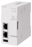

Modul Jaringan/Komunikasi OPC UA

OPC UA
OPC UA adalah standar komunikasi yang tidak bergantung pada platform yang dikembangkan oleh yayasan OPC, AS.
Ini memungkinkan pertukaran data antara vendor dan produk yang netral terhadap OS, dan menawarkan komunikasi data yang aman dan andal antara tingkat manufaktur dan sistem TI tingkat tinggi.
OPC UA adalah arsitektur untuk pertukaran informasi antara aplikasi dan perangkat.
Dalam format yang sesuai dengan FX5-OPC, informasi dipertukarkan antara klien OPC UA (aplikasi atau perangkat eksternal) dan server OPC UA (FX5-OPC).
Informasi yang akan dipertukarkan terdiri dari objek dan referensi sebagai satu set. Protokol khusus yang dibangun dalam lapisan jaringan TCP/IP digunakan untuk pertukaran informasi.
Komunikasi OPC UA cocok untuk digunakan di semua jaringan termasuk Internet karena keamanan ujung ke ujung yang kuat.
OPC UA
| Model | OPC UA version |
OPC UA server profile |
Connection method | Compatible CPU module | ||||
|---|---|---|---|---|---|---|---|---|
| FX5U | FX5UC | FX5UJ | FX5S | |||||
|  | FX5-OPC OPC UA module |
1.03 | Micro Embedded Device Server Profile |
Ethernet | *1 ○ Up to 1 module |
*1 *2 ○ Up to 1 module |
× | × |
- *1Didukung dalam versi 1.245 atau yang lebih baru.
- *2Saat menghubungkan ke FX5UC, diperlukan FX5-CNV-IFC atau FX5-C1PS-5V.
Logo OPC UA dan OPC CERTIFIED adalah merek dagang terdaftar dari OPC Foundation.
Produk ini mencakup perangkat lunak yang dikembangkan oleh OpenSSL Project untuk digunakan dalam OpenSSL Toolkit.
(http://www.openssl.org/)
Produk ini mencakup perangkat lunak yang berasal dari Algoritma Message-Digest MD5 RSA Data Security, Inc.